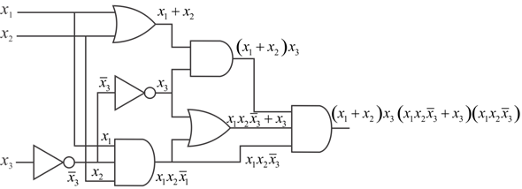
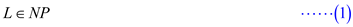
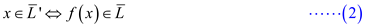

Refer to the circuit given in figure 34.8(b) of the text book.
Verifying that the circuit is unsatisfiable requires the following steps to be followed:
• Find out the Boolean formula or the expression for the output of the circuit diagram.
• Reduce the expression further to make the observations easier.
• Draw truth table for every possible input values for the circuit and derive the output.
Then using the truth table, it is found out whether the circuit is unsatisfiable.
Satisfiability: It refers to whether an interpretation exists according to which the value of the Boolean formula becomes TRUE.
In other words, it means whether a combination of possible truth values of the variables can make the Boolean formula give TRUE as the output. The absence of such an interpretation is called unsatisfiable.
Finding out the Boolean expression for the circuit diagram:
The Boolean expression for the circuit diagram can be done by individually observing each segment of the circuit diagram and then combining these observations together appropriately.

On individually observing each segment and combining according to the function of the GATES, the output expression that is obtained is the following:
The above is the output expression for the circuit diagram.
Reducing the output expression:
The output expression can be reduced by using the various Boolean laws and theorems as follows:
As it can be seen from the reduced expression of the output expression, the output always holds 0 (or FALSE) as the value.
So, there are no interpretations according to which the Boolean circuit gives TRUE value as output. The output of this circuit diagram is always FALSE. Therefore, drawing the truth value table is not needed anymore as the output remains FALSE constantly for any combination of input values.
Thus, it is proved that the circuit diagram is unsatisfiable.
Consider a polynomial-time reduction. The
polynomial-time reduction  means,
“there exists a computable function
means,
“there exists a computable function : alphabet
of Lalphabet of
M in such a way that for all
: alphabet
of Lalphabet of
M in such a way that for all , if and only
if”.
, if and only
if”.
Proving relation is a transitive relation:
• Consider two polynomial-time reductions and. In other words, there exists a polynomial-time computable reduction functions andin such a way that :
…… (1)
…… (2)
• Now, define a function such that, .
Now, it is enough to prove that is
polynomial-time reducible to
(i.e.). In other
words, for all, .
• Assume that, ,
o Then, from equation (1), .
o Since, , from equation(2), . That is
Thus, if , then …… (3)
• Let.
o Then according to equation (2),
o Since, according to equation (1),
Thus, if  ,
then ……
(4)
,
then ……
(4)
From equations (3) & (4), that is, if and only if .
Hence, there exist a polynomial-time reduction from to or , if and .
By the definition reducibility, if and are two languages and there is a polynomial-time computable function such that for all , if and only if , then the language is said to be polynomial-time reducible to .That is,
Now, it is required to prove that if and only if .
1)
Assume that .
Then by the definition, for all
if and only if
Also,  if and only
if
if and only
if
if and only if [Since, and are complement
each other and  ]
]
Therefore if , then ------(1)
2) Proving converse:
Assume that .
Then by the definition, for all
if and only if
Also, if and only if
if and only if [Since, and are complement
each other and ]
Therefore if, then ------(2)
From (1) and (2), it is proved that if and only if
Consider the following alternative proof of Lemma 34.5. The Lemma 34.5 shows that CIRCUIT-SAT belongs to NP.
Here, it is given that or an encoding of a CIRCUIT-SAT problem C and a certificate that denotes an assignment of the Boolean values to every wires in the C.
Consider the following algorithm which is constructed to proof the above statement:
Algorithm:
1. Check the every gates and after that the output wires of C.
2. for every gate check the following
3. if
4. the computed value and the output value of the wires given in the
certificate is matched and the output of the overall circuit is 1
5. then
6. return 1
7. else
8. return 0
Running time complexity of the above algorithm:
• As it can be easily seen from the above algorithm that checking performed for every gate and for all gates the computed and the output values are matched.
• Therefore, the total polynomial time will be taken to perform this computation.
• Hence, it is proved that, CIRCUIT-SAT belongs to NP.
For an easier proof, the alternative certificate used is given as, “A true assignment to the inputs”.
In this user have assumed that the working storage for above algorithm holds a contiguous region of polynomial size. Below, it is show that how are user exploiting this assumption in the above lemma.
a. At the top most priority user state it to be true that the
number of bits to notify each configuration is
polynomial in terms of n. Now, consider the program for
algorithm A has constant size, as A
runs in steps; the
total heap of work storage too will also be polynomial on .
.
b. The combinatorial circuit  using the
computer’s hardware has a size polynomial configuration in the
length, which is also and is
therefore an n polynomial term.
using the
computer’s hardware has a size polynomial configuration in the
length, which is also and is
therefore an n polynomial term.
c. Every step of algorithm that makes p takes polynomial time.
d. The circuit P contains number of
configuration and that too of
Without assuming the above assumption the CIRCUIT SATISFIABILITY PROBLEM cannot be shown NP HARD.
• The term “without loss of generality” means that a proof and assumption can be used in the same related problems and cases.
• Here, it has been observed that one assumption of storage size has been taken to show it for 4 cases.
Hence it is following the without loss of generality principle and furthermore it can also be used to solve other NP HARD problems.
According to the provided information, a language L is complete for a language class C with respect to polynomial time reduction if and for all.
Objective is to show that are the only ones which are themselves present in P but are not complete with respect to polynomial time reductions.
To prove that a language L in P is complete, it should be in P and every problem in P can be reduced to the problem at hand in polynomial time. This is done by the following method:
• Reduction from first problem to second problem requires mapping the “yes” instances of the first problem to the “yes” instances of the second problem.
• Then mapping the “no” instances of the first problem to the “no” instances of the second problem.
The two languages that are given are.
• It is already given that the languages are in P.
• The empty string doesn’t have any “yes” instances because it doesn’t accept any language at all. So, every input is rejected by this language.
• The language doesn’t have any “no” instances because it accepts every language that is composed of any combinations of two symbols – 0 and 1 including empty combination.
Since,  doesn’t
have any “yes” instances anddoesn’t
have any “no” instances, therefore, it is not possible to define a
reduction from any other problem in P to these problems
because all other problems have both “yes” as well as “no”
instances.
doesn’t
have any “yes” instances anddoesn’t
have any “no” instances, therefore, it is not possible to define a
reduction from any other problem in P to these problems
because all other problems have both “yes” as well as “no”
instances.
A language  reduces to
language if and only
if there is a function such that
for every string in the first language, the
function can map to second language and for
every string not in the first language, the
function shouldn’t map it to any string of the second
language. This
mapping should be done in polynomial time.
reduces to
language if and only
if there is a function such that
for every string in the first language, the
function can map to second language and for
every string not in the first language, the
function shouldn’t map it to any string of the second
language. This
mapping should be done in polynomial time.
Assume the languages and
are
in P. So, it is obvious that they can be decided in
polynomial time.
The two edge cases of have already been handled previously so, it has not be handled here.
Let and .
Now the mapping function is defined as follows:
If, then and if, then.
According to this, does
represent a reduction from language to the
language.
Since both languages belong to the class of P problems,
so language can be
solved in polynomial time and thus, the reduction function
can
also be computed in polynomial time.
Thus, the languages and in P except are not complete for P in polynomial time reductions.
According to the exercise 34.3-6 of the textbook, a language L is complete for a language class C with respect to polynomial time reduction if and for all.
A language L is Complete for NP with respect to polynomial time reduction.
From the definition of NP-complete; if and for all.
Suppose L is Complete for NP, then

If NP is closed under complement, then NP=co-NP.
So, Will be Co- NP and .
According to exercise 34.3-6, polynomial time reduction function ‘f’ is as follows:
for all
Then 
From the above equation (2)
for all 
From equation (3) it is proved that is complete for Co-NP.
Therefore, L is complete for NP if and only if is complete for Co-NP.